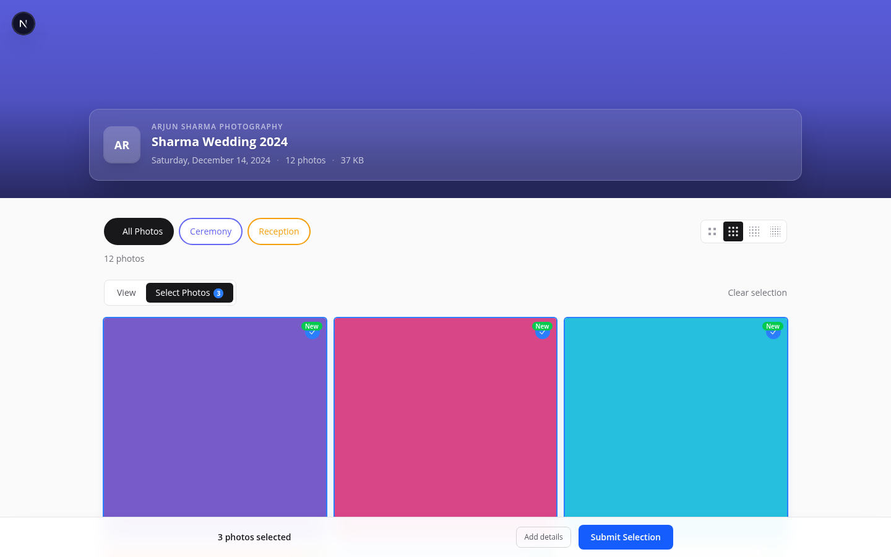
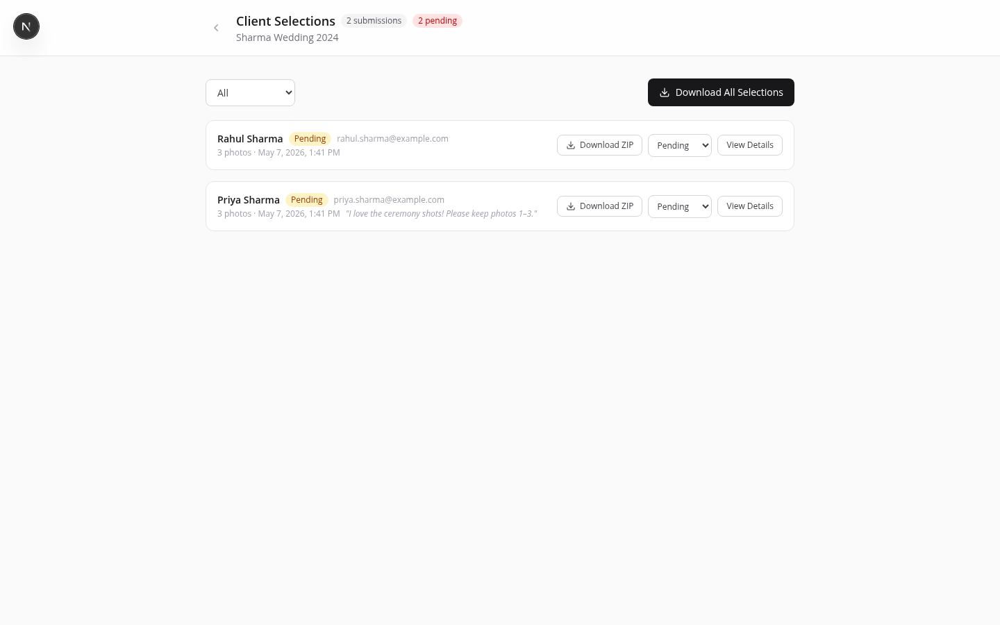

How Clients Select Photos
Once a client opens the gallery, they switch to Select Photos mode using the toggle at the top of the page (or the floating button on mobile).
- Enter selection mode
Click Select Photos in the mode toggle bar. A blue checkmark overlay appears on each photo card.
- Tap photos to select
Selected photos show a filled blue checkmark. Tap again to deselect. The count updates in the bottom bar.
- Add a note (optional)
Tap Add details in the bottom bar to expand the form. Enter your name (required), email (optional), and a free-text note for the photographer.
- Submit
Click Submit Selection. The photographer receives an email notification.

Reviewing Selections
When a client submits a selection, a red badge appears on the Selections button in your event header. Click it to open the Selections page.
Each submission shows:
- Client name and email
- Submission date and time
- The client's note (if any)
- Thumbnails of every selected photo
- Status: Pending → Reviewed → Delivered

Selection Status
Move selections through a simple workflow:
- Pending — new, unreviewed submission.
- Reviewed — you've looked at it and acknowledged it.
- Delivered — final photos have been sent to the client.
Downloading Selections
From the Selections page, click Download All Selections to get a ZIP of the chosen photos. Pro Studio
ZIP download of selections is available on Pro and Studio plans. Free accounts can download photos individually from the lightbox.
Notification Email
When a client submits a selection, PhotoHouse sends an email to the photographer with the client's name, selected photo count, event name, and a link to the selections page. Configure your SES email settings in the admin panel to enable this.